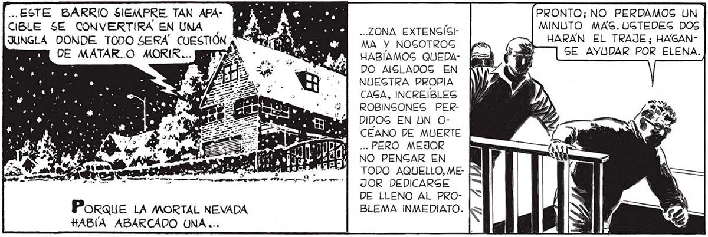
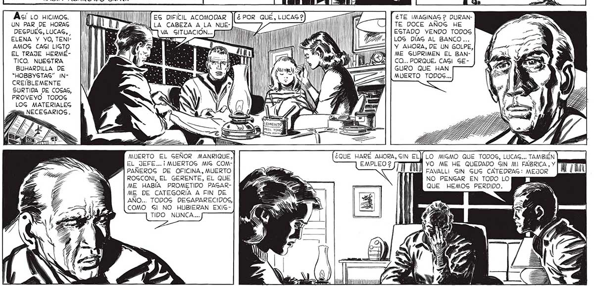

..ESTE BARRIO SIEMPRE TAN APA- MEME O PRONTO; NO PERDAMOS UN CIBLE SE CONVERTIRA EN UNA : ñ da 13 . SS ZONA EXTENGÍSI- MINUTO MAS. UGTEDEG DOS JUNGLA DONDE TODO SERÁ CUESTION ; 74 7 0 O MA Y NOGOTROG S PO | HARAN EL TRAJE; HAGANMEE DE MATAR.O MORIR... ezr vs o HABÍAMOG QUEDA- <= EAS : - e Y ¿e? PA $] DO AISLADOG EN NUESTRA PROPIA CAGA, INCREIBLES ROBINGONES PERDIDOG EN LN OCEANO DE MUERTE ... PERO MEJOR NO PENGAR EN TODO AQUELLO, MEJOR DEDICARSE DE LLENO AL PROPoraue LA MORTAL NEVADA BLEMA INMEDIATO. HABÍA ABARCADO UNA ... Mea MES pa UN PAR DE HORAS A YO ENTRE TANTO, IRÉ AL GARAJE Y VERÉ CÓMO PUEDO TRANGFORMARLO EN UNA EGPECIE DE CAMARA COMPENGADORA.. él UN LUGAR POR EL CUAL UNO PUEDA Rz GALIR GIN QUE LOG COPOG GE NOS TE DOCE AÑOG HE EGTADO YENDO TODOS LOS DIAG AL BANCO... DEGPUEG,LUCAG, |! PA. | ELENA Y YO, TENI- |ll ES 3 | AMOG CAGI LIGTO WABRLOY - E e Lar 5 Y AHORA, DE UN GOLPE EL TRAJE HERMÉ- || ¿ZA A E EY : WII e ME GUPRIMEN EL BANTICO. NUESTRA A ; // LS A lA l' PAE OSA EU NS] | CO... PORQUE. CASI GEBUHARDILLA DE | A O A: A | | NAS ———=——l | GURO QUE HAN “HOBBYSTAS” IN- |l A E da | - Yi MUERTO TODOS... CREÍBLEMENTE | a RR | 3 A ' SURTIDA DE COSAS, PROVEYO TODOS LOG MATERIALEG Hs NECESARIOS. í " ¿TE IMAGINAG 2 DURANI > MUERTO EL SEÑOR MANRIQUE] EL JEFE... ¡ MUERTOG MIG COM- A YO ME HE QUEDADO GIN MI FABRICA, Y PP PAÑEROG DE OFICINA, MUERTO GS A FAVALLI GIN GUG CATEDRAG: MEJOR ROGCONI, EL GERENTE, EL QUE NO PENGAR EN TODO LO ME HABÍA PROMETIDO PAGAR- Pa Sa QUE HEMOS PERDIDO. ME DE CATEGORIA A FIN DE S AÑO... TODOG DESAPARECIDOS, COMO Gl NO HUBIERAN EXISTIDO NUNCA...

